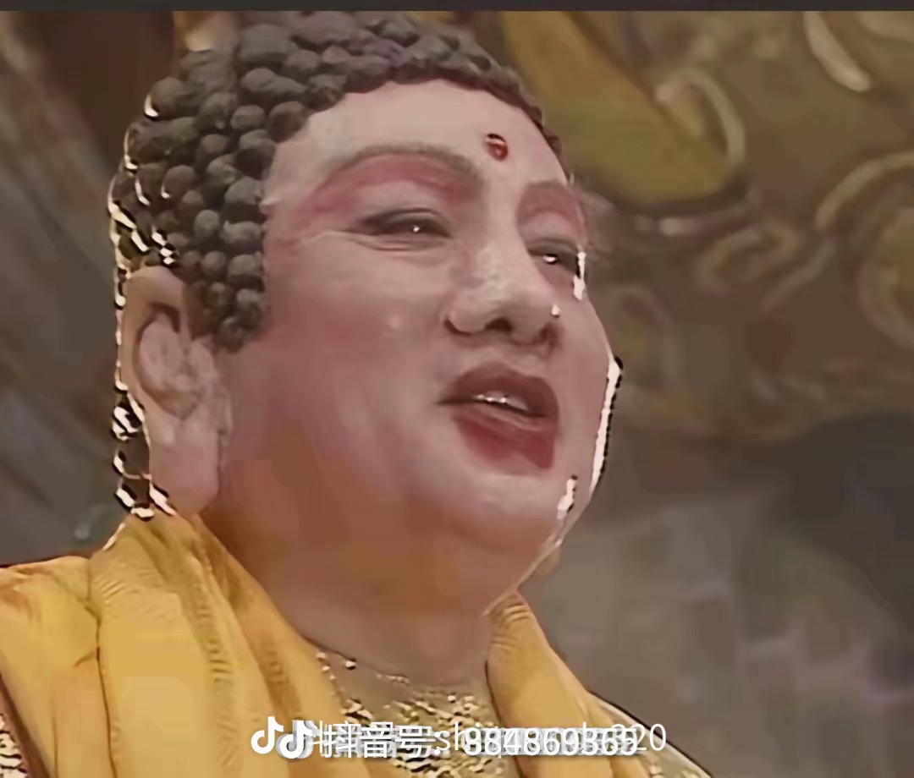
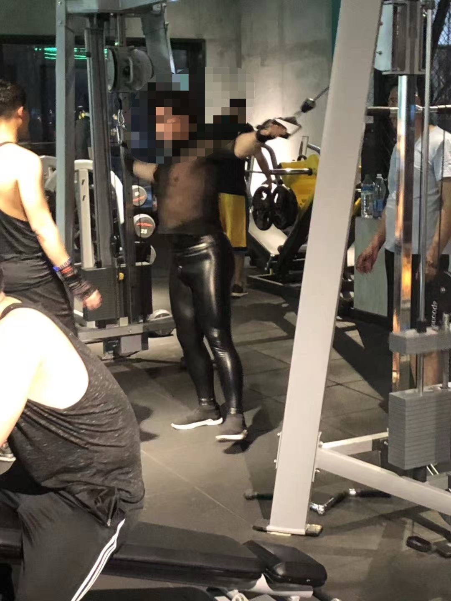
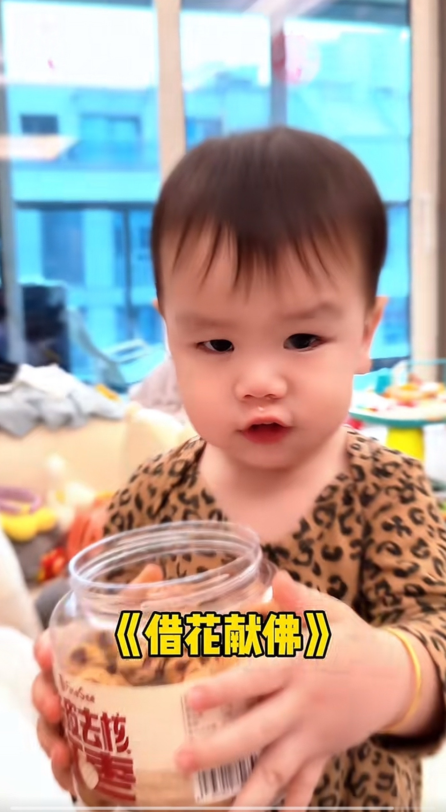

明天最后还款日？
评论区基本都在夸男的，可是明明谭维维也唱的超级好听，刷到这个视频我是听到女声开头被震撼了一些
黄子弘凡你怎么这么会唱，清唱更有感觉了[泣不成声][泣不成声][泣不成声]
我发现很神奇的一件事，潜意识里感觉妈祖就是刘涛的样子，同样的关公就是陆树铭，彭于晏就是我，孙悟空就是六小龄童，济公就是游本昌
永远的美猴王[比心]
时间[流泪]
说实话，我感觉只有他演的孙悟空看起来舒服[微笑]
唱的好 赐经 最痛的经 
姐好强的穿透力！
我滴妈 好好听有点像袁娅维的唱腔@初鳐eeer
我嘞个老天爷。。。。如此好听
好帅啊，尤其是最后那一下[发呆][飞吻]
好帅的背影 [舔屏]
安全气囊被你拆了
居然有人才说那个膜是气囊[捂脸]
那一层膜是他的安全气囊。
已牵制监管者60秒[憨笑][OK]
你比鸟🐦聪明[调皮]
我只会追着它跑，然后飞走了，大喊：我的饭卡啊[躺平]
趁着它捡卡的时候交互，一个平aa它一个恐惧震慑[呆无辜]
我告诉你一个办法，你买好吃的去换，等它熟练之后， 它以后就会故意去叼别人的卡了。[送心]
喜鹊智商很高的，你能和它过两招，不愧是大学生
感觉逗人玩呢 光躲也不飞
我的天这就是大学生吗，好聪明[赞]
好聪明，要我我还真抢不过来了[黑脸]
禽兽之变诈几何哉?止增笑耳。
其实鸟也在逗他玩，要不然它早飞走了[捂脸]
每次打永劫无间都会忍不住轻哼起来[愉快]
钟哥来个燕云十六声[送心]
模板来了： 如果有天我 __ __ 了__ __ 如果你 __ __也 __ __ __ __ 兄弟请你不要放声哭泣 我一定不会让__受委屈
钟哥你敢碰火影忍者试试呢 [憨笑]
钟哥快出一期第五人格我求你了[憨笑]
我家靠我会投胎，外公外婆买的[思考]
闺蜜，我求你了，你去榜个大款行不行我真的快坚持不住了[愉快]
现在才明白，我是给孩子找爸，不是给自己找老公[尬笑]
搞得好像我不是恋爱脑就可以嫁到这种似的[黑脸]
[猪头]今天看到一句话送给大家：“在正常范围内，美味的食物不会变成你身上的白油脂肪，而是会转化成温热的血液，红润的脸颊，美丽的秀发和明亮的眼睛，是支撑你逃离一切你憎恨环境的力量”。
我5.1婚礼 我婆婆说金价太高了不划算买 可不可以以后降了在买 我说可以 ，确实也是贵，我公公婆婆也只有我老公一个儿子，以后公公婆婆百年之后家里都是我们两口子的，而且公公婆婆也对我很好，就没买了[泪奔]
神器锻造者奥恩
血统极纯！和我们健身房他有的一拼！ 
你好请您明天早上9点到前台退卡。
后来裁判还当莎莎面蛐蛐她：你快看着她挑球吧，她把男的的拿走了，当然都是笑着说的[泪奔]
哈哈哈哈她把球倒掉后还特地看了裁判 “你看 我只要筐”

莎莎打比赛可爱的很 当裁判气的更可爱哈哈哈哈
这个好，敲晕，送我闺蜜
完全靠腰腹力量把这么大个小男孩托举起来，核心绝了[赞]
海军这衣服，身材不好真不敢穿啊[捂脸]
厉害了纯原声吗？王源好干净的声音
王源这句 “请不要因为我是王源而否定我的歌” 这句话的含金量还在上升！！！
人的偏见，是一座无法逾越的大山。 如果不爱 也请不要伤害
王源的声音没问题，甚至很优秀，那些黑子不只尬黑
终于知道王源为什么这么火了 嗓音干净温暖 粉丝能给我推荐一些他的歌吗？
看了评论区，王源还是一直这么火唱这么好还被喷[捂脸]
我朋友说[宕机][宕机][宕机]
我是路人！救命救命！好纯净好清透的声音！好喜欢！
“源吧啦，你很有名” ——《源耳》
竟然……有点……想看……王源演唱会……
“王源好” “王源好什么？” “王源好会唱” ——《王源藏不住》
老天爷 终于懂什么叫天赐的声音
纯路人，非王源粉丝，觉得王源的嗓音唱出来了那种遗憾心痛的感觉
为啥这么多人喷呢，我感觉王源唱歌一直都挺好听啊[捂脸][捂脸]
我耳朵应该没问题吧本来就很好听啊[黑脸]
王源一唱歌。浦南们又轻轻吻了上来。 —《王源代表浦南的心》
这不是普通的好听，而是王维诗里的好听。 ——《相王源》
我同意王源以后唱歌不放伴奏 直接清唱[憨笑][赞]
因为有你这样的依靠～～～嗷～～～
全国人民坚决支持[赞][赞][赞][赞][赞][赞]
羡慕爸爸妈妈儿女双全
身后的老弟：
世上只有妈妈好，一模一样，不用开口就知道卡子到底爱谁～[捂脸]
眼睛里只有对食物的渴望
卡子哥长大了，知道谁是食物链最顶端的人了[得意][得意][得意] 
突然想起了哥哥小时候[偷笑][机智][机智][机智]
从什么时候开始爱妈妈了[笑哭][笑哭]
今天我终于站起来了[二哈]
那我倒要看看有多骚
人的密封性很好，每个人都带着屎走来走去却没有屎味。对狗来说人就是一个冰淇淋机。人就是一把屎枪，吃完饭就是在上膛，你拉屎的时候又何尝不是一个人形裱花袋呢？人的本质就是粑粑馅饺子。
第一个自己会闻到吗？？？？我老熬夜[流泪][流泪][流泪]
熬夜不会臭，熬死了会臭[泣不成声]
一个爱熬夜的小女生悄悄的碎了
我小时候看他就长这样[流泪]
有没有一个混过韩流的人能懂我在2025年看见郑容和的含金量有多高[流泪]
不知道为什么记忆闪回到偶练的范丞丞和郑锐彬[流泪]
这不叫看到真面目，这叫制造问题和矛盾
但是换个角度思考 如果面对这种事情还能装出来很耐心也挺恐怖的[黑脸][赞]
在你和某人结婚之前 你可以先把对方化妆品抹屁股上 粉底液擦胸上 口红涂手上 这样就可以看到对方的真实面目[泪奔][捂脸]
《忍了十年的老好人突然有一天把妻子杀了》[看]
服从性测试这一块[憨笑]
感觉宇宙因为有伤还不怎么敢做动作啊
狗：你是不是听不懂人话
🐶:别逼我在最快乐的时候扇你
给你鞋是让你扔，不是让你穿[微笑] ——边牧
狗:我不是每一口都能咬在鞋上
不扔给老子
你在不扔，我看它要跳起来给你一巴掌[泪奔]
长春多待几天奥
《3弟环绕》[微笑]
三个高渐离把瑶关在河道之灵了
这个系列我模仿不了，刚开口对方就同意了[流泪]
能去这里拍一集吗？
拍下来直发闺蜜 好友群，瞬间炸开💥魅力如此之大[九转大肠]
这个我拍不了，我一开口就同意了[流泪]
TFboys长这么大了吗？
Read more: